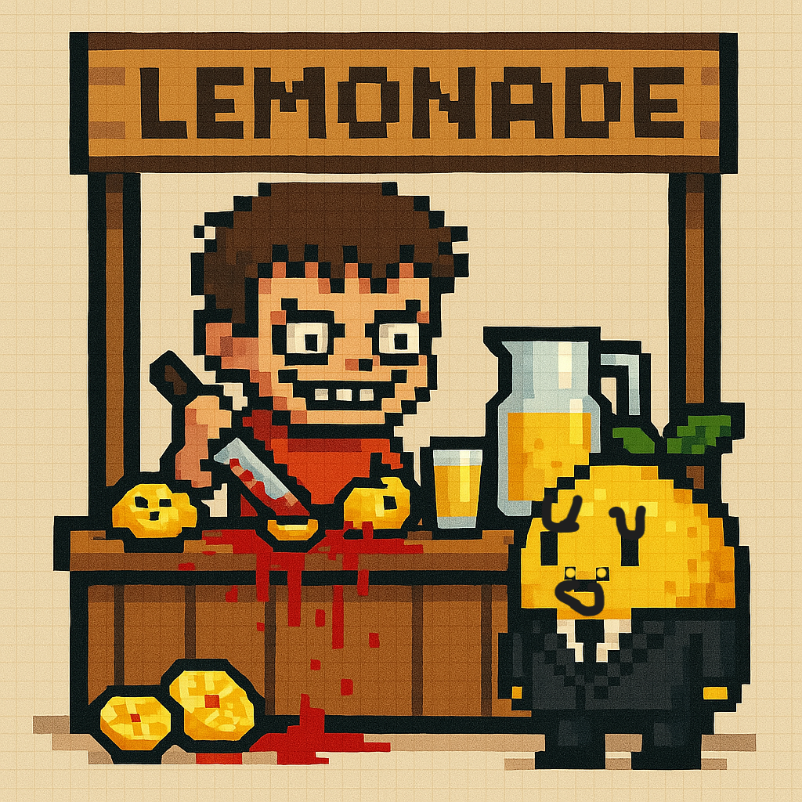

este es limon
limon es un limon muy feliz y positivo siempre dando su mejor actitud ante las diversidades de la vida cotidiana en su mundo no hay politica ni filosofia ya que no hay dudas ni preguntas solo existen limones felizes para el pero si hay algo que lo desconcierta y aterra
limon se entero de esto cuando escucho una conversacion de dos humanos en la que decian que el pequeño y tierno timi hacia las mejores limonadas afura de su casa a el le dio curiosiadad ya que no sabia que era eso y lo primero que penso es que era una fiesta solo para limones asi que fue emocionado con un smoking
el feliz y inocente limon no estaba listo para ver lo que la vida le mostraba
